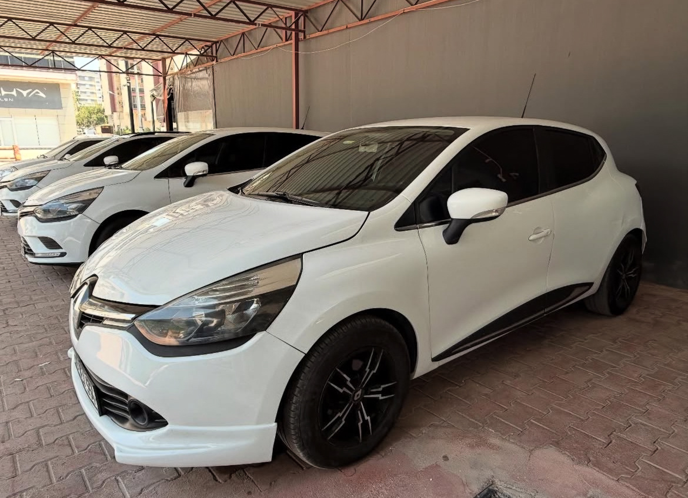
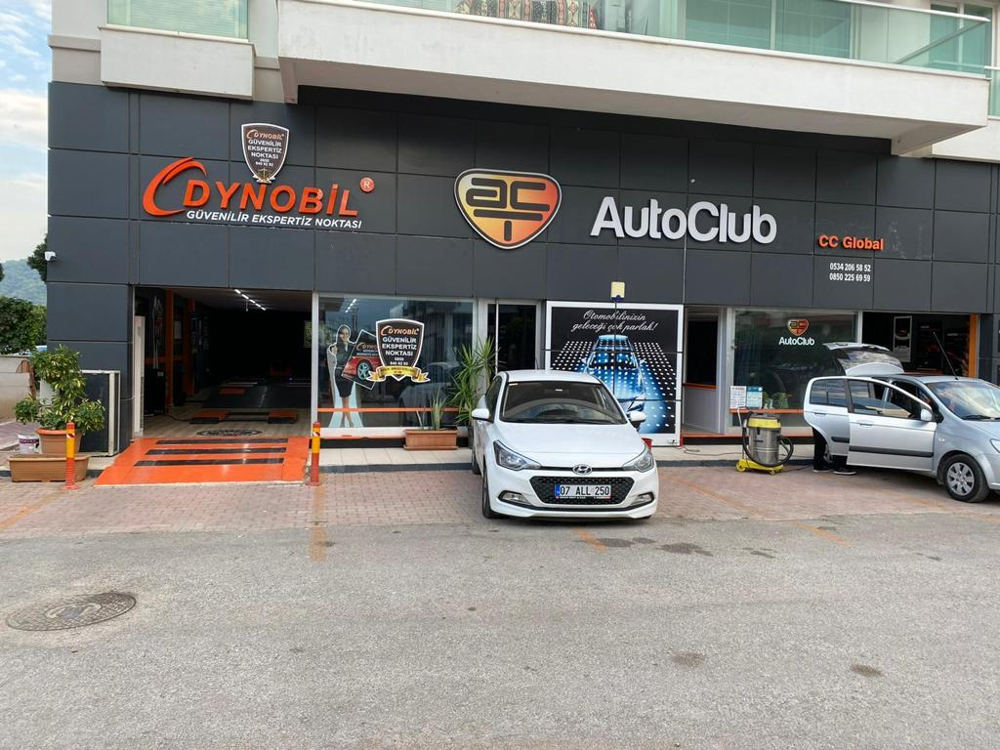
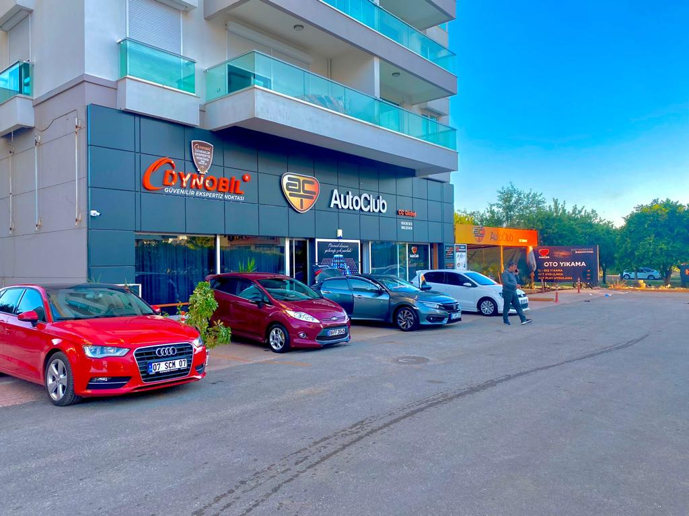
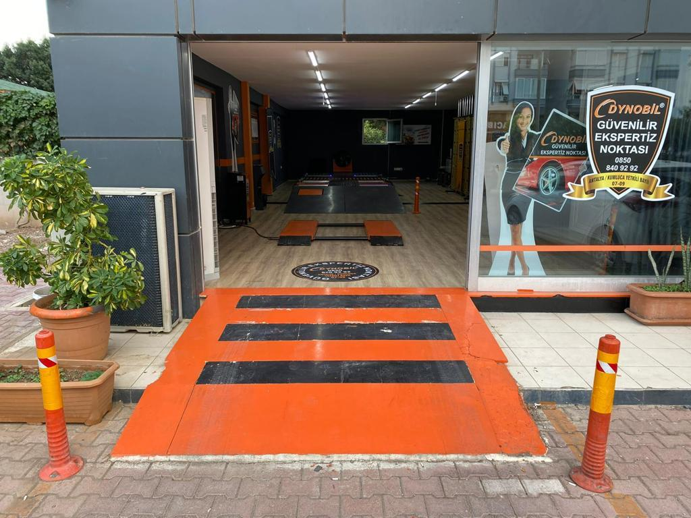

İkinci el araç alım sürecinizde, detaylı inceleme ve şeffaf raporlama hizmetimizle yanınızdayız. Aracınızın gerçek durumunu öğrenerek içiniz rahat bir şekilde karar vermenize yardımcı oluyoruz.
İlgilendiğiniz hizmetleri işaretleyin, kapsam ve fiyatı tek mesajla WhatsApp'tan sorun.
Hizmet ve paket bilgisi işletmeden alınacak; yayında işletmenin kendi listesi gelir.
Paket içerikleri ve fiyatları işletme tarafından bildirilir.
Hizmeti, aracınızı ve size uygun zamanı seçin; mesaj WhatsApp'a hazırlanır. Randevu, işletmenin teyidiyle kesinleşir. Çalışma saatleri: Pzt–Cmt 08:00–19:00 · Paz kapalı.
Ekspertizden önce satıcıya sorun; cevapları işaretleyip listeyi kopyalayın.




Aracın tüm aksamlarını titizlikle inceliyor, gözden kaçabilecek detayları raporlarımıza yansıtıyoruz.
Haluk Bey ve ekibimiz, tüm süreç boyunca sorularınızı yanıtlayarak size yardımcı olmaktadır.
Alacağınız aracın durumunu olduğu gibi sunarak, bilinçli bir karar vermeniz için destek sağlıyoruz.
Kumluca ve çevresindeki araç piyasasına hakimiyetimizle hızlı ve güvenilir sonuçlar üretiyoruz.
📍 Meydan mahallesi, Ahmet Ali Ağa Blv. No:77, 07350 Kumluca/Antalya
🕑 Pzt–Cmt 08:00–19:00 · Paz kapalı